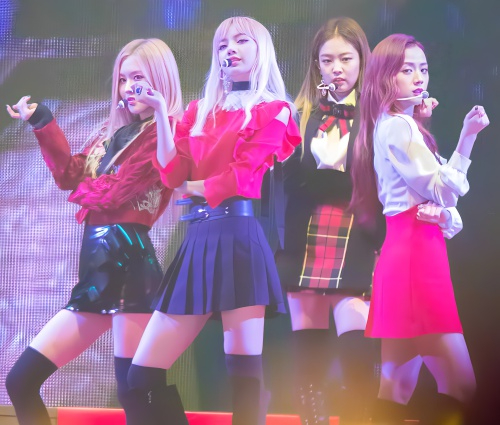

Historia
Predebut
El 5 de junio de 2016, YG Entertainment comenzó a revelar imágenes de su nuevo grupo de chicas (anteriormente «PinkPunk») para generar expectativa en el público.
Cada semana se revelaba una integrante, empezando por Jennie, quien colaboró anteriormente con artistas de su misma agencia. El 8 de junio, se reveló a Lisa, la chica misteriosa que sorprendió a muchos con un vídeo de YouTube subido en el canal de la propia agencia. El 15 de junio, la foto de Jisoo fue revelada, la miembro mayor del grupo, ya conocida por el público debido a las revistas ilustradas para diversas marcas y apariciones en vídeos musicales, además de un breve papel en el drama coreano The Producers. El 22 de junio, Rosé se reveló como el último miembro. Fue previamente conocida por su participación en la canción «Without You» de G-Dragon en 2012, llamando la atención por su voz.Por último, el 29 de junio, YG reveló imágenes con el grupo completo, anteriormente reveladas individualmente, lo que confirma la formación del grupo: Jennie, Jisoo, Lisa, Rosé.
La agencia confirmó fecha de debut del grupo para la última semana de julio, sin embargo, debido a los retrasos del grupo hizo su debut el 8 de agosto.
2016: Debut con Square One y Square Two
Debutaron con el sencillo Square One el 8 de agosto de 2016. La primera canción, titulada «Whistle», fue una «pista hip-hop minimal» y fue producida por Teddy Park y Future Bounce, y escrita por Teddy Park y Bekuh BOOM. La segunda canción titulada «Boombayah», fue producida por Teddy Park y coescrita con Bekuh BOOM. Su vídeo musical fue dirigido por Seo Hyun-seung.
Los sencillos debut de BLACKPINK alcanzaron el número uno en el chart de Billboard World Digital Songs. Fueron el grupo más rápido en hacerlo, y el tercer artista coreano en ocupar las dos primeras posiciones después de PSY y Big Bang. «Whistle» encabezó los charts digitales, de descarga, de streaming y móviles de Gaon en agosto de 2016. También alcanzaron el número uno en las listas semanales, de popularidad, de vídeo musical y de música de K-pop del sitio de música más popular de China QQ Music. La primera aparición del grupo en televisión fue emitida el 14 de agosto de 2016 en el programa Inkigayo de SBS. Su victoria en el programa batió el récord para un grupo femenino que tarda el menor tiempo en ganar en un programa de música tras su debut (14 días). Terminaron sus promociones para Square One el 11 de septiembre de 2016 con otra victoria en Inkigayo.
Blackpink lanzó su segundo álbum sencillo, Square Two, con las pistas principales «Playing with Fire» y «Stay» el 31 de octubre de 2016. Las canciones fueron producidas por Teddy junto a R.Tee y Seo Won Jin. Realizaron su escenario de regreso en Inkigayo de SBS el 6 de noviembre y en M! Countdown de Mnet el 10 de noviembre de 2016. «Playing With Fire» fue su segundo sencillo en llegar al número uno en el chart de Billboard World Digital Songs.